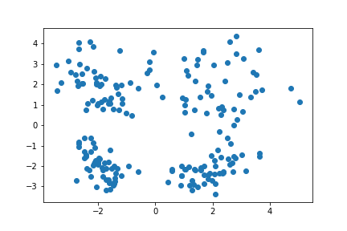
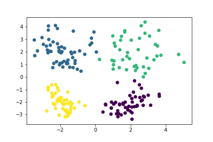
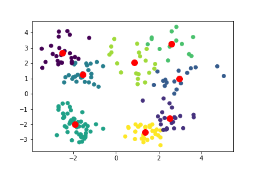
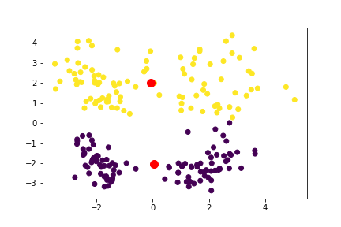
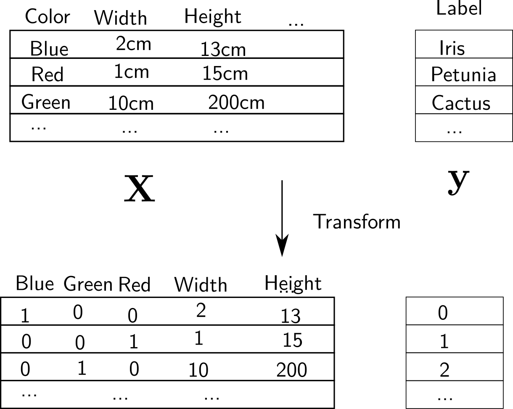
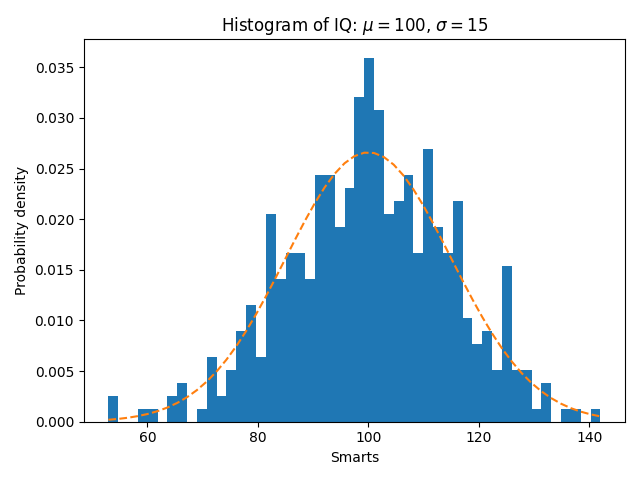
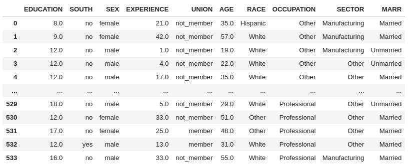
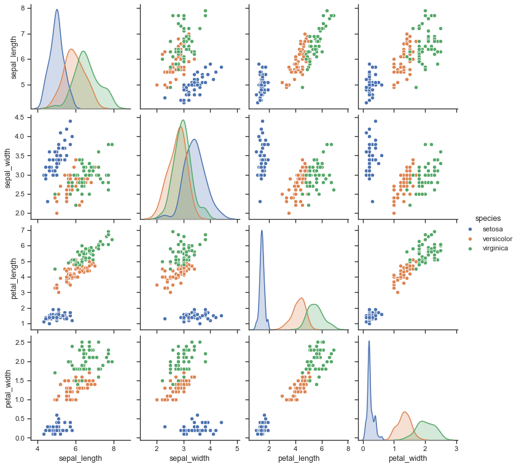

class: center, middle ## Machine learning with scikit-learn Arthur Mensch .affiliations[  ] --- # Previously today Formal definition of supervised learning - $x \in \mathbb{R}^p \to \hat y = f_\theta(x) \in \lbrace 0, 1 \rbrace$: classification - Is this mail a spam ? Is this a dog ? - $x \in \mathbb{R}^p \to \hat y = f_\theta(x) \in \mathbb{R}$: regression - What is the height of this flower based on its age and species ? --- # This lecture - What if there isn't any label ? A short introduction to unsupervised learning - How do I code all of this ? A short introduction to `scikit-learn` --- # Unsupervised learning What can we do if we are only provided data without labels ? .center[  ] --- # Unsupervised learning Cluster them around compact areas .center[  ] --- # Unsupervised learning What happened ? .center[ <img src="kmeans2.png" style="width: 500px;" /> ] We found centroids $(y\_j)\_{1\leq j\leq c}$, with minimal distance $ \sum\_{i=1}^n \text{Dist}\big(x\_i, (y\_j)\_{1\leq j\leq c}\big) $ --- # Unsupervised learning Overfitting .center[  ] --- # Unsupervised learning Underfitting .center[  ] --- # Unsupervised learning .center[ <img src="kmeans2.png" style="width: 500px;" /> ] Why is it useful ? - Cluster number is a new feature ! - Propagate a few known-labels (semi-supervised learning) --- # What should we do to train a model ? - We are provided a $n \times p$ matrix $\mathbf{X}$ with n samples with p features - With labels $y \in \mathbb{R}^n$: $n$ associated labels (in a supervised setting) 1. Transform data into a numerical matrix 2. Split the data to retain a *test set* 3. Fit a certain estimator to the data 4. Evaluate the estimator on the data --- # Getting the data into a numerical format In order to train a model, we need the data to look like a 2D matrix: - Each sample holds a certain number of numerical features - These features must be build from non-numeric fields. .left-column[  ] .right-column[ - Categorical field made into binary columns - Handle timestamps / ordinal data (ordered labels) / etc. - Remove column mean, divide by column variance ] --- # Splitting the data into a train/validation set - Evaluate a certain model $f\_{\theta}$ over new data - Split $\mathbf{X}$, $\mathbf{y}$ into training and evaluation examples $$(\mathbf{X}\_{train}, \mathbf{y}\_{train}), (\mathbf{X}\_{test}, \mathbf{y}\_{test})$$ - Learn $\theta$ with $(\mathbf{X}\_{train}, \mathbf{y}\_{train})$, evaluate it on $(\mathbf{X}\_{test}, \mathbf{y}\_{test})$ --- # Fitting the data and evaluating prediction - Define $f_\theta$ with various parameters (**Instantiate**) - Learn $\hat \theta$ with $(\mathbf{X}\_{train}, \mathbf{y}\_{train})$ (**Fit**) - $\hat y\_{test} = f\_{\hat \theta}(X\_{test})$ (**Predict**) - Compare $\hat y\_{test}$ and $y\_{test}$ (**Score**) - Select the model $f$ with the best generalization (**Model selection**) Scikit-learn provides the API to do it easily --- # How to implement it ```python from sklearn.datasets import load_iris from sklearn.model_selection import train_test_split from sklearn.svm import LinearSVC from sklearn.metrics import accuracy_score iris = load_iris() X, y = iris['data'], iris['target'] # type: np.ndarray estimator = LinearSVC(C=1.0) # provide optional parameter here X_train, X_test, y_train, y_test = train_test_split(X, y) estimator.fit(X_train, y_train) # change the internals of the estimator (theta) y_pred = estimator.predict(X_test) accuracy = accuracy_score(y_test, y_pred) # Evaluate the misclassification ``` --- # Loading data ```python from sklearn.datasets import load_iris iris = load_iris() X, y = iris['data'], iris['target'] # type: np.ndarray ``` Scikit-learn allows to access many *benchmark datasets* - `load_XXX` loads toy datasets published with the library - `fetch_XXX` downloads bigger dataset from the internet - Create your own ! We want to have $X$ and $y$ numeric matrices, i.e. `numpy.array` - `scikit-learn` provides `Transformer` for this (studied later) --- # Splitting data ```python from sklearn.model_selection import train_test_split X_train, X_test, y_train, y_test = train_test_split(X, y) ``` - Utilities to separate training and validation data - Other utilities to do it repeatedly: `KFoldSplit`, `ShuffleSplit` - Stratify according to a group (as many male/female in the train/test groups) --- # Defining an estimator ```python from sklearn.svm import LinearSVC estimator = LinearSVC(C=1.0) ``` Many different models (see documentation) - Classification (multi-class/binary) - Regularization - Multi-target (several targets to predict) In particular: - All linear models (`Ridge`, `SVM`, `LogisticRegression`) - Random forests / tree based classifier/regressors (`DecisionTreeClassifier`, `RandomForestClassifier`, ...) - Neural-network (Multi-layer perceptron `MLPClassifier`/`MLPRegressor`) --- # Defining an estimator ```python from sklearn.svm import LinearSVC estimator = LinearSVC(C=1.0) ``` Many hyper-parameters, that changes - The model (example: `width`/`depth` for neural-networks) - The function comparing `y_pred` and `y_true` - The regularization over parameters - The method used to fit the model --- # Fitting an estimator ```python estimator.fit(X_train, y_train) ``` The `estimator` is a stateful `Python` object. The fitted parameter $\hat \theta$ is stored as attributes ```python estimator.intercept_, estimator.weight_ ``` - Linear: Holds the weight $W$ and bias $b$ of the linear model - For neural-networks: many weights and biases - Random forests: holds the various decision rules - Those attributes allows to use test-time functions --- # Using an estimator ```python y_pred = estimator.predict(X_test) ``` - Predicts the output: $\hat y = f\_\theta(X\_{\textrm{test}})$ - Linear models: $\hat y = \textrm{argmax}\_{\textrm{class i}} (W x + b)\_i $ - Similar in neural-networks - Output of the decisions in decision trees - Majority voting/mean in random forests - When a probabilistic model is available (classifier) ```python y_pred = estimator.predict_proba(X_test) # y_pred.shape = (n_samples, n_classes) ``` --- # Evaluating an estimator ```python from sklearn.metrics import accuracy_score accuracy = accuracy_score(y_test, y_pred) # Evaluate the misclassification ``` - Many metrics in `sklearn.metrics`: - mean squared error, average error for regression - precision and recall for binary classification - F1 score, balanced accuracy for multi-class classification --- # Evaluating an estimator For classification, all metrics derive from the confusion matrix ```python from sklearn.metrics import plot_confusion_matrix plot_confusion_matrix(estimator, X_test, y_test) ``` Estimator can evaluate their performance directly on test data ```python estimator.score(X_test, y_test) ``` with the metric adapted to the estimator. - Often you want to choose the metric yourself ! --- # Unsupervised learning ```python from sklearn.datasets import make_classification import matplotlib.pyplot as plt # Synthetic 2D dataset for visualization X, y = make_classification(n_samples=200, n_features=2, n_redundant=0, class_sep=2) km = KMeans(n_clusters=4) km.fit(X) y_pred = km.predict(X) plt.scatter(X[:, 0], X[:, 1], c=y_pred) ``` .center[ <img src="kmeans2.png" style="width: 300px;" /> ] --- # Choosing your estimator .center[ <img src="images/ml_map.png" style="width: 800px;" /> ] --- # Preprocessing - Data may come in an Excel-like format: - `numpy array` with column names - Object of the `pandas` library - We need to transform it into a true numpy array - Use `Transformer objects` ```python # Assume X is a dataframe with strings transformer = OneHotEncoder(sparse=False) transformer.fit(X) # Notice the absence of y X = transformer.transform(X) ``` --- # Useful preprocessing - Scale the columns: `$x_{i, j} = \frac{x_{i, j} - \text{Mean}(x_j)}{\sqrt{\text{Var}(x_j)}}$` - So that they are zero-mean and one-std ```python standard_scaler = StandardScaler() standard_scaler.fit(X) X_t = standard_scaler.transform(X) print(X_t.mean(axis=0)) # [0, 0, ..., 0] print(X_t.std(axis=0)) # [1, 1, ..., 1] ``` - Impute missing values ```python imputer = SimpleImputer(strategy='median')) imputer.fit(X, stragy='median') # X contains `np.nan` X_imp = imput.transform(X) # X no longer contains `np.nan` ``` --- # Useful preprocessing - Reduce the dimension of the $X$ matrix - Random projection (multiplication of $X$ by a matrix $P \in \mathbb{R}^{p' \times p}$) - Principal component analysis: multiplication of $X$ by a matrix $P$ that maximizes the variance of $P X$). ```python from sklearn.decomposition import PCA pca = PCA(n_components=10) pca.fit(X) X_t = pca.transform(X) # X.shape = (n_samples, p'=10) ``` --- # Useful preprocessing - Select relevant features only ```python from sklearn.feature_selection import SelectKBest, f_regression anova_filter = SelectKBest(score_func=f_regression, k=3) # Will select the 3 best features that are # the highest-correlated with the target y anova_filter.fit(X, y) X_t = anova_filter.transform(X) # X_t.shape = (n_samples, 3) ``` --- # Model selection `scikit-learn` provides meta-estimators: ```python estimator = LinearSVC(C=1) estimator_cv = GridSearchCV(estimator, param_grid=dict(C=np.logspace(-7, 0, 1))) # Still an estimator ! estimator_cv.fit(X, y) # Tests validation performance for all C ``` - So that you may forget about hyper-parameters - While knowing what you are doing (too big a grid overfits !) --- # And also - The `Pipeline` object to connect `transformers` and `estimators` - [Example](https://scikit-learn.org/stable/auto_examples/compose/plot_digits_pipe.html) of piping a dimension reduction and a logistic regression - Many other preprocessing utilities: - Label pre-processing - Dimension reduction - Feature selection - Standard routines: `cross_val`, etc. - Plotting functions: - Precision/recall curves / Training curves / Feature importance / Data visualization --- # Implement your own model - The API is well defined and should follow known rules - You may create your own estimator object and connect it to `Pipeline` and `GridSearchCV` --- # Companion lib: `matplotlib` .center[  ] --- # Companion lib: `Pandas` - `Pandas` to handle columnar data + time-series .center[  ] --- # Handling `pandas.DataFrame` - `Pandas` to `numpy` with `ColumnTransformer` and `Pipeline` ```python X, y = fetch_openml("titanic", version=1, as_frame=True, return_X_y=True) categorical_columns = ['pclass', 'sex', 'embarked',] numerical_columns = ['age', 'sibsp', 'parch', 'fare'] X = X[categorical_columns + numerical_columns] X_train, X_test, y_train, y_test = train_test_split(X, y, stratify=y) categorical_pipe = Pipeline([ ('imputer', SimpleImputer(strategy='constant', fill_value='missing')), ('onehot', OneHotEncoder(handle_unknown='ignore')) ]) numerical_pipe = Pipeline([ ('imputer', SimpleImputer(strategy='mean')) ]) preprocessing = ColumnTransformer( [('cat', categorical_pipe, categorical_columns), ('num', numerical_pipe, numerical_columns)]) preprocessing.fit(X_train) X_train = preprocessing.transform(X_train) # Now a Numpy array ``` --- # Companion lib: `Seaborn` - Quickly visualize `pandas` DataFrame .center[  ] [Gallery of plots](https://seaborn.pydata.org/examples/index.html)